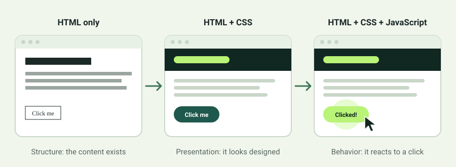

HTML
The structure: headings, paragraphs, links, and other content.
Explore HTMLYou do not need to be an expert to understand how websites are made. You just need a little curiosity and a willingness to experiment.
Every website begins with something someone wants to share, explain, or make easier. A website can be a digital notebook, a store, a class resource, or a tool that solves a real problem. Web development is the process of turning that idea into something people can open in a browser.
Most websites are built from three foundational technologies: HTML organizes the content, CSS decides how it looks, and JavaScript helps it respond to people. Each one has a different job, and learning to separate those jobs makes programming much less intimidating.

The structure: headings, paragraphs, links, and other content.
Explore HTMLThe presentation: spacing, color, typography, and layout.
Explore CSSThe behavior: clicks, changing information, and interactions.
Explore JavaScriptOne thing that makes web development rewarding is the feedback. Change a line of code, refresh your browser, and you can see what happened. It is normal for the first version to look simple. Each improvement gives you a better understanding of the page and more control over what you can create.
Think of this guide as a tour of the building blocks, not a race to master every programming language.
THE GOAL: UNDERSTAND WHAT EACH PIECE DOESYou can follow these lessons in order or visit the section that interests you most. The examples are intentionally small so you can try them yourself.
I would love to hear from you. This short survey asks which lesson helped you most, what was confusing, and what you would like to learn next. After you submit it, you can see how your answers compare with other readers. There is also space to leave me a message.
How the Web Works